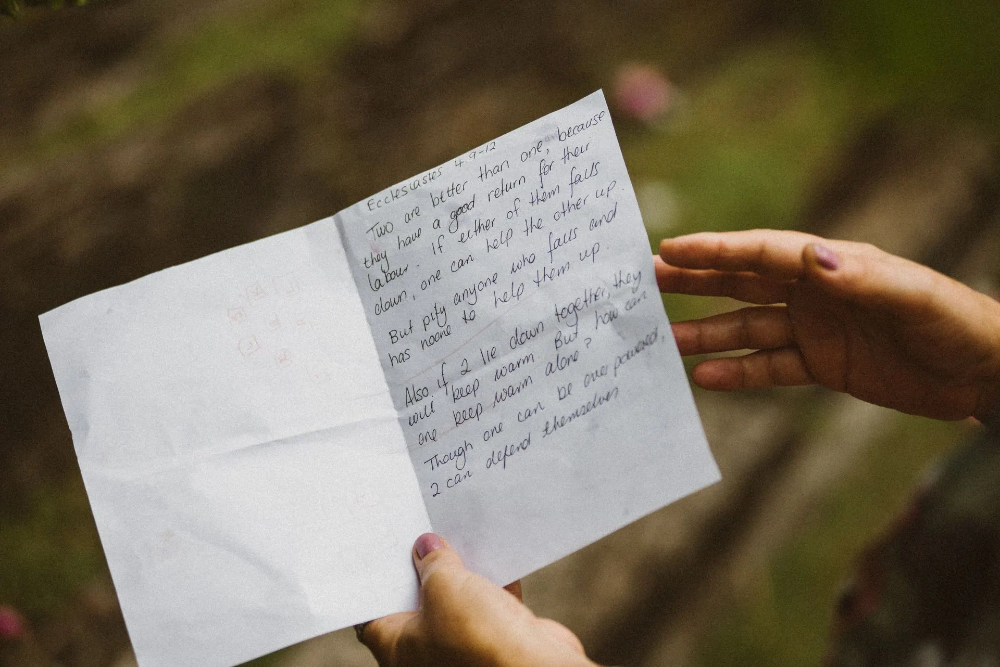

November 13
World Kindness Day lesson: plan one small kindness in 25 minutes, straight from this page
A free, no prep World Kindness Day lesson for grades 2 to 8: where November 13 comes from, polite versus kind, and a Notice, Do, Say plan. Project it and teach.
What your class will see
Press Teach it now and the board plays these in order. Click any slide to start there.
What it is
World Kindness Day is observed on November 13. It comes from the World Kindness Movement, a network of kindness organizations around the world. The movement's website says it grew out of a series of conferences in the 1990s, and that the origins of the day trace back to the establishment of the movement in 1998.
The movement says it sought to make kindness a common thread linking all nations, beyond political, religious and geographical divides. It invites people to take part through small gestures or larger projects. Its own examples are paying for a stranger's coffee, handing out kindness cards with positive messages, and organizing community events or workshops about kindness.
Kindness is easier to practice when it is specific. This lesson uses three steps of our own: notice a need, do one small thing, and say one sincere sentence. Students plan two real kindnesses that could happen at school this week.
How to run it
25 minutes, 5 steps. The time on the left is when each step starts.
-
0:00
Warm-up: polite or kind?
4 minOn the boardPolite or kind? 1. Saying thank you to a cashier. 2. Moving over so a classmate can sit with your group. 3. Helping a classmate pick up spilled pencils. 4. Sitting with someone who is alone at lunch. Where would you draw the line between polite and kind?
You do- Read the four situations. For each one, students hold up one finger for polite and two fingers for kind.
- Point out the disagreements. Do not settle them yet.
Say: There is no wrong answer yet. Remember where you drew your line.
-
4:00
The day in four facts
4 minOn the board- World Kindness Day is November 13.
- It comes from the World Kindness Movement, which connects kindness organizations around the world.
- The movement says it aims to make kindness a common thread linking all nations.
- Its own ideas are small: pay for a stranger's coffee, or hand out kindness cards with positive messages.
You do- Read the four facts aloud, one slide at a time.
- After the third fact, ask what "a common thread" means.
Say: A common thread runs through the whole cloth, like one color of yarn through a sweater.
-
8:00
Notice, Do, Say
10 minOn the boardPlan two kindnesses that could really happen at school this week. NOTICE: what does the person need? DO: one small action that costs nothing and takes under two minutes. SAY: one sentence that is true and kind. Example: A new student stands alone at recess. NOTICE: they may not know the games. DO: ask them to join yours. SAY: "We are playing tag. Want to be on our team?"
You do- Model the example on the board out loud, one step at a time.
- Students write two plans alone for four minutes. No names: write "a classmate" or "a new student."
- Partners trade papers and check two things: is the DO small enough to finish, and is the SAY true?
- Three volunteers read one plan aloud.
Say: A kind plan is small enough that you will actually do it.
-
18:00
Back to the line
4 minOn the boardLook at your plans. Where is the line between polite and kind now? What does a kind plan have that politeness does not?
You do- Return to the warm-up situations. Ask whether anyone would move their line, and why.
- Take three answers. A strong answer names a person and a need.
-
22:00
Exit ticket
3 minOn the boardWrite one of your plans in a single sentence. Say who it is for and when it will happen.
You do- Students write on a scrap of paper and hand it to you at the door. Return the papers on Friday and ask who did it.
Discussion questions
Open an answer when you want it.
Why does this lesson say a kind act should be small and specific?
A small, specific act is easy to start today. "Be kinder" is hard to do, but "ask the new student to join our game" is a clear action.
Is it still kindness if no one knows you did it?
Yes. Kindness is about the other person's need, not who gets credit. The World Kindness Movement's own examples include acts for strangers, such as paying for a stranger's coffee.
How can an act be polite but not kind, or kind but not polite?
Polite follows a social habit, like saying thank you. Kind notices what one particular person needs, like sitting with someone who is alone. A quiet act, like handing over a pencil without a word, can be kind even if it is not polished.
What could make a kindness plan fail, and how would you fix it?
It could be too big, too vague, or not true. Shrink it to under two minutes, name the person and the need, and write a sentence you really mean.
Exit ticket
Write one Notice, Do, Say plan for this week in a single sentence, and say who it is for.
A complete answer names a specific need, one small action and who it is for. Example: a classmate forgot a pencil, so lend one and say "You can keep it today."
Make it fit your class
Younger students
For kindergarten to grade 2, use kind hands, kind words and kind eyes. Students draw one kind thing they can do with their hands and say one kind word out loud. Skip the polite versus kind line and the written plans.
Older students
For grades 9 to 12, have groups design a week long kindness routine for a whole grade level in Notice, Do, Say form, such as an advisory routine or a school wide action. Each group names one thing that could go wrong and how they would handle it.
Want it printed? These files from our TPT store go with this lesson: Kindness Bingo.
Free files that go with it: Bucket Filler Activity.
Where the facts come from
- World Kindness Movement, World Kindness Day. Used for the origins of World Kindness Day tracing back to the establishment of the movement in 1998, the aim of making kindness a common thread linking all nations, and the examples of paying for a stranger's coffee and handing out kindness cards.
- World Kindness Movement, About Us. Used for World Kindness Day observed on November 13, and the movement originating from a series of conferences in the 1990s.
Image credits
- Close-up of Hands Holding a Handwritten Letter Outdoors by Didi Lecatompessy, Pexels License. Source.
- Hands Holding Thank you Note and Envelope by Towfiqu barbhuiya, Pexels License. Source.
- A Barista Giving a Cup of Coffee to a Customer by Kampus Production, Pexels License. Source.
- Hands Passing the Globe to the Person by Mikhail Nilov, Pexels License. Source.
- Yellow Line on Tennis Court by Ala J Graczyk, Pexels License. Source.
- Person Holding Pencils by Nothing Ahead, Pexels License. Source.
- Close-up of Assorted Coloring Pencils by Kaboompics (kaboompics.com), Pexels License. Source.
- Close-Up Shot of a Person Writing on a Paper by Anna Tarazevich, Pexels License. Source.
- Backpack on Brown Wooden Bench by Julia Filirovska, Pexels License. Source.
- Yellow Yarn on YellowSurface by Karen Laårk Boshoff, Pexels License. Source.
Updated October 31, 2026